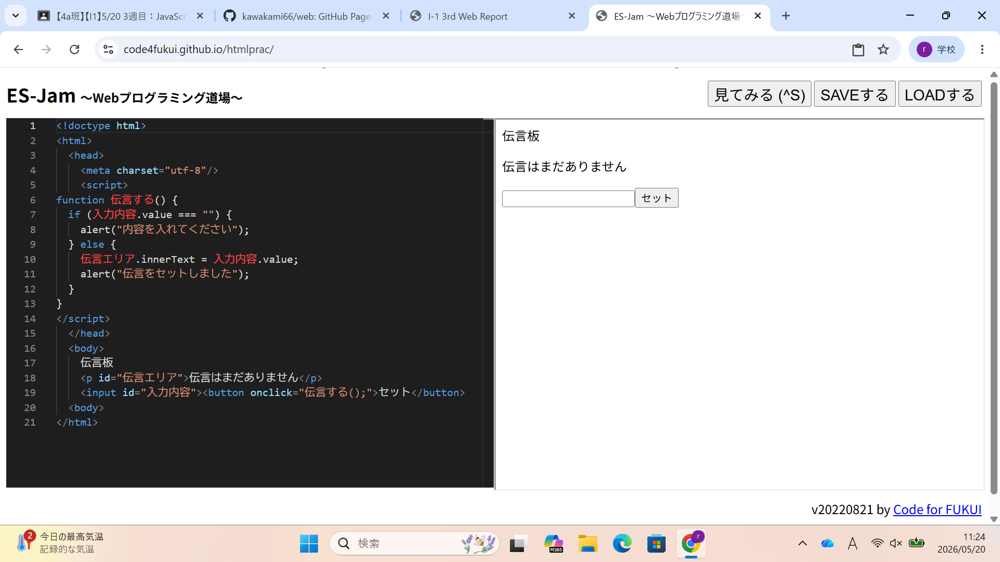

3-2 JavaScript体験：伝言プログラムを作る

伝言板
1.内容
学習した内容を説明する文章を
自分で考えて作成する（50文字以上．100文字程度を推奨．※生成AIを使ってはいけない）
1からプログラミング言語を使ってボタンや文字を入力するテキストボックスを表示したり、入力した文字をページに反映する方法や、予想外の使い方に対応できるプログラムを作った。
2.感想
学習した内容を実践したときに自分が感じた感想を
自分で考えた文章で作成する（50文字以上．100文字程度を推奨．※生成AIを使ってはいけない）
1からプログラミング言語を使ってプログラムを作るのはscratchとかより大変だと思った。個人的には文字を入力するテキストボックスが出てきたときや、ボタンが出てきた時が一番すごいなと思った。案外簡単に表示できることを知った。